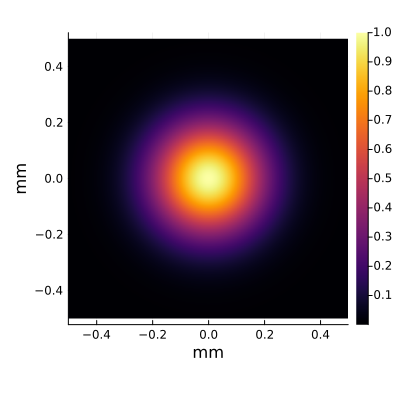

2D Light Field
The 2-dimensional light field data types provide a more convenient way to represent the light field in the plane space and can be used with our optical propagation methods.
OpticalPropagation.MonoLightField2D — Type
MonoLightField2DMonoLightField2D is used to represent a 2-dimensional monochromatic light field.
Examples
julia> using Unitful
julia> MonoLightField2D([1 2; 3 4],wavelength=632.8u"nm",size=(1u"mm",1u"mm"))
MonoLightField2D:
wavelength: 6.328e-7 m
physical size: (0.001 m, 0.001 m)
complex amplitude data:
2×2 Matrix{ComplexF64}:
1.0+0.0im 2.0+0.0im
3.0+0.0im 4.0+0.0imWork with Plots.jl
The 2-dimensional light field data types can work with Plots.jl, so it will be more convenient when we want to visualize a light field. For example,
using Unitful
using Plots
gauss = MonoLightField2D(
[exp(-(x^2+y^2)/6400) for x in -200:199, y in -200:199],
wavelength=632.8u"nm",
size=(1u"mm", 1u"mm")
)
plot(gauss)